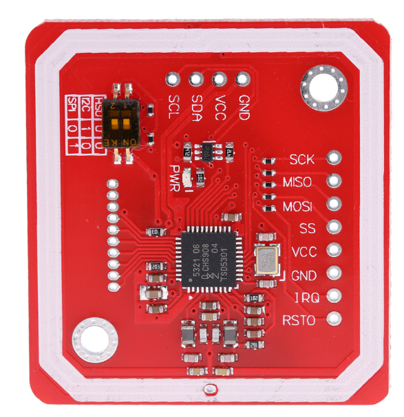
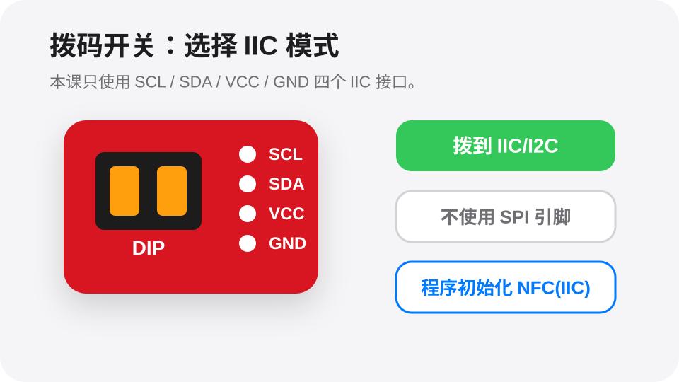
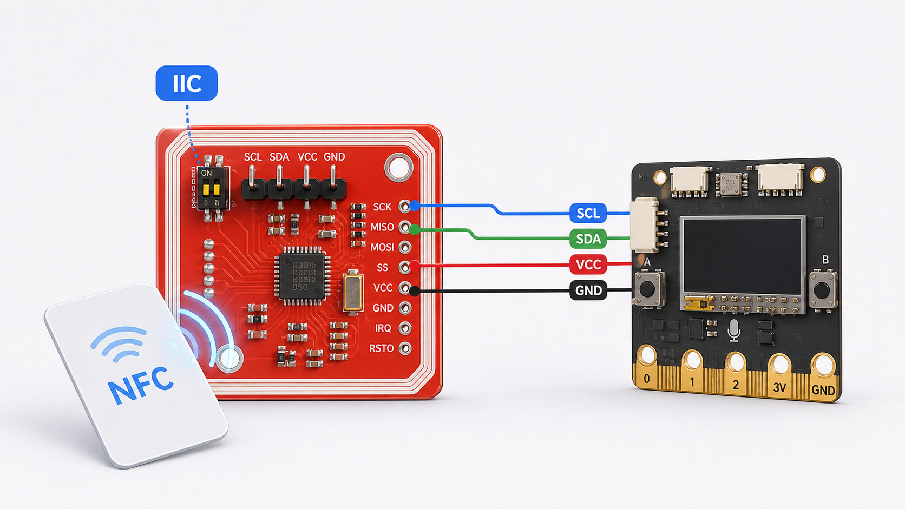
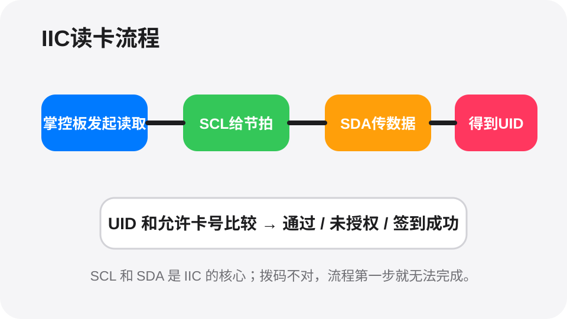

读取一张卡片编号。
把卡片靠近模块，读取并显示卡号。
接线答案
拨码开关拨到 IIC / I2C 模式
SCL 接掌控板 SCL
SDA 接掌控板 SDA
VCC 接掌控板 3V3
GND 接掌控板 GND
Mind+可视化程序答案
当掌控板启动
初始化 NFC 模块（IIC）
重复执行
如果 NFC 读取到卡片
设置 变量「卡号」= 读取到的 UID
屏幕显示「卡号」和变量「卡号」
等待 0.5 秒，避免同一张卡连续刷屏
今天我们学习一个能让作品更聪明的小模块。目标不是背知识，而是做出能看见、会判断、能行动的小作品。

刷公交卡、门禁卡时，机器会读到卡片身份。我们也能做一个刷卡作品。
公交卡、门禁卡常用RFID或NFC技术。它们让卡片不用插进去，也能被机器识别。
它可以读取卡片编号，常用于刷卡签到、门禁和身份识别。
这块 NFC 模块同时引出了 IIC 和 SPI。我们这节课走 IIC 协议，所以只接上方 SCL、SDA、VCC、GND 四个接口，并检查拨码开关是否在 IIC 模式。

这张图把模块、掌控板、卡片和 IIC 四根线放在一起，帮助学生看清连接关系。

NFC 模块靠近卡片后，会读取卡片里的 UID 编号。掌控板通过 IIC 协议和模块通信：SCL 像时钟节拍，SDA 负责传数据。程序拿到 UID 后，就能判断这张卡是不是允许通过。

左上角拨码开关用来选择通信方式。使用本课程序前，要把拨码设置到 IIC/I2C 模式；如果拨到 SPI，SCL/SDA 程序就读不到卡片。
把卡片靠近模块，读取并显示卡号。
把一张卡设为通行卡，其他卡不通过。
刷到指定卡后显示签到成功，并避免重复刷太快。
挑战：做一个“刷卡借书系统”。不同卡片代表不同同学，刷到允许卡显示「借书成功」，刷到陌生卡显示「请先登记」。